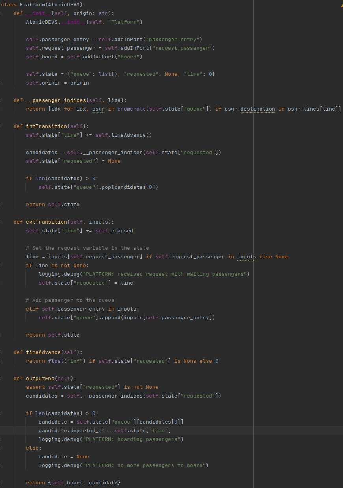

Assumptions
-
The two tracks joining at zeigler Circus first pass through a virtual junction with traverse_delay of 0 seconds, the junction and the station are connected with a track of length 0 meters.
-
Capacity of the trolley over time is interpreted as amount of passengers in the trolley as the capacity of the trolley would just be a flat line.
-
We don't have any special logic for passengers that have an unreachable destination, they will just wait indefinitely.
Part 1: Components of the Model
Passenger

The code can be found here. We see here that we use a dataclass to create a new passenger. The passenger has the default attributes, such as the origin and the destination. We also store the all the stations related to a specific line. This is so that the passenger knows where step off. And for extra statistics, we also maintain the time at what the passenger departed and when it arrived. Another metric is whether the passenger used a trolley or not.
Trolley

The code can be found here. As with the passenger, we used a dataclass and have the default parameters of the trolley, like the velocity, the line it serves and the capacity. Because we want to know what the remaining capacity of the trolley is, we also keep the passengers that use the specific trolley. We have defined a helper function to identify if the trolley is full.
Rail

The code can be found here. A rail has an input and an output port, through which they can receive trollies. It also has a given length, as well as a delay (default = 10) during which we need to wait before letting another trolley pass. The last piece of the puzzle is the fact that we have a state, that stores all the trolleys that are waiting before entering the rail.
First off we have a helper function that decrements the timers of each of the trolleys that are waiting by a certain amount. Next up, we have some functions related to DEVS formalism itself. The timeAdvance function does contain the value of the first trolley in the queue, otherwise we have an infinite timeAdvance. So that there won't fire anything in the model. For the internal transition we make it so that there is a trolley that can depart, because it's timeer should be 0. As a consequence, we remove the trolley from the queue. As an outputFunction we take the front of the queue and return that trolley. When we have an external transition we first need to decrement the timers by the elapsed time (this is equivalent to ignoring an event and having multiple timers). The logic for calculating how much time it needs to end on this rail is the nowait time. We then calculate the arrival time of the trolley, and store this in the state.
Junction
The code can be found here. A junction joins multiple rails together and has one output rail. To obtain this in devs we have multiple input ports and one single output port. Apart from this, we also need to keep the transfer time of a junction (i.e. how long it will take before another trolley can transfer the junction). We also keep the name of the junction and a state. This state contains a list of lists, which themselves contain 2 elements, namely the trolley and the arrival time.
The logic is almost the same as with the rail, apart from the external transition function. We take the trolley out of the inputs and append it to the list of the trolleys to pass. We always will wait 10 seconds before another trolley will pass.
Split

The code can be found here. For the split we only need one input track, but multiple output tracks. This is almost the exact opposite of the junction, we also need to keep a routing, which line need to be outputted on which output track. We also have a state that is initially None, although it will be changed throughout the run of the simulation.
The internal transition resets the state always to None, because there is no trolley waiting to be split to another rail. The external transition will temporarily store the trolley in the state. We use the routing in the output function in order to output the trolley on the right output rail. The time advance is only 0 when there is a trolley currently being split.
Station

The code can be found here. Most of the cod written here is because this is a coupled devs, so much can't be said about this part. Aside from maybe what the num of outputs calculates. It calculates the number of outputs, based on the outgoing lines. The other part is the routing, that is described before and maybe another interesting parameter is the destinations, this is what the next stations are called.
Generator
The code can be found here. From the generator we only need an output port in order to receive the passengers on the station. We also need their origin [station. We use a set of all the possible destinations, and along with that we need the distribution function parameters, mu and sigma. Then we also have the lines which contain the stations on a specific line. For the last attribute we have the state, which encompasses the remaining time for the next passenger and the total amount of passengers that have been generated.
The distribution method will calculate the time for the next passenger to be generated. When we perform an internal transition we increase the generated passengers by 1 and update the remaining time by a new value generated by the distribution. The time advance will always be the time at which the next passenger will be generated. The output function generates a new passenger, which brings along with it an origin, a destination and the corresponding lines. The statistics function just gives the amount of passengers that have been made.
Collector

The code can be found here. This part of the code makes use of the statistics gathering patter, as well as the complex state pattern. We have the collector statistics class, which contains some parameters like the average time that a passenger traveled, the amount that exited at a (desired) destination and the amount that exited at their origin destination. We have the collector which keeps the departed passenger (in our terms this means that the passenger arrived if this event occurs), the origin station and all the passengers as well as the elapsed time since the beginning. This elapsed time since the beginning is called the simulated time and is another pattern for DEVS.
For the next part we'll discuss the methods. The first method is the time advance, because we never will never perform an internal transition or output something, this always must return infinite. Therefore, we have fewer functions, but we have an external transition, which logs all the passengers that leave the track and as a consequence a trolley. In this method we take that passenger and store it into the list of passengers for that track.
Platform
The code can be found here. On a platform we have two input ports (the passenger entry and the request passenger) and an output port (board). three provide an interface to the generator, the track and the track respectively. the state contains a queue a requested parameter and the simulated time. We also keep the origin of the platform.
We first describe the helper method passenger_indices. This method is used to get the indices from all the passengers that are in the queue that can be on the line. We use the simulated time pattern described in the course notes. In order to decide what the time advance should be we check if there is a passenger requested by the track, if there is then we set the time advance to 0, otherwise we set it to infinity. The internal transition is performed by selecting all the candidates, that can be on the line. We unset the requested state and give remove the retrieved candidate first valid candidate from the queue. For the external transition we need to select the line of the requested passenger. And only when we have passengers waiting for that line we can set the requested parameter in the state to the line that is requested. Otherwise, if we have a passenger entry, we need to add it to the passenger queue. Last but not least, we have the output function, that can only be executed if the there is a requested passenger, and there are candidates. the candidates are then chosen from the candidates list, and only the first candidate is chosen that has a destination that is on the requested line. We also store the departed time of the candidate passenger.
Track

The code can be found here. For this part we chose an atomic DEVS to encode the track. First, we need to set all the different types of waiting times, notice that the first 1 is the amount of seconds. This is because we need to check the light each time we try to depart. The first part of arriving on a track at a station is a certain arriving delay, for which we wait at a station, the next part is the unboarding of the trolley, followed by the boarding of the trolley. At last, we have the time that it takes to depart from the station. We add some input and output ports as shown in the station diagram. Next up we define the origin of the station and the probability of wrongly unboarding at that station. Lastly, we have the stat which contains the busy polling of the light for a new trolley if there is no trolley at the track otherwise the boarding sequence of a trolley is started.
This passenger indices helper function gives back all the passengers that can leave the trolley, this can be either because they need to be there. Or there is a slight chance that they are confused and get off the trolley (this has a 20 percent chance of happening). The internal transition checks in which state it is and depending on the state it chooses what to do.
- When the trolley is arriving then the state must become unboarding, the trolley, the passengers that can get off the trolley and 0.
- When we discover that we are in the state unboarding and the amount of passsengers that can unboard equals the passengers that are able to unboard, we can get to the boarding phase. This phase takes all the passengers that can board and boards them onto the trolley and set the state to the boarding state and keep the trolley also in it.
- When we only have that we were in the unboarding phase we need to lower the amount of passengers that can unboard.
- When we try to board when the trolley is full then we can move to the state departing.
- When we are in the state departing, then we just can depart.
For the external transition we need to fire we need to have a board input or a dequeu input.
- If we have a board input we need to check that we are in the boarding state, check that the capacity of the passenger is lower or equal to that of the trolley, and check that the destination of the boarding passenger is on the line that it is boarding. We take the passenger of the input and store the unique id of the trolley with the passenger. Then we add the passenger to the passengers that have boarded the trolley.
- For the dequeue of the trolley input, we need to check that the state is none and the trolley arriving. This is so we can set the state to arriving and the trolley that has been given to the track.
The time advance just keeps the waiting time of the current phase or state it's in. For the output function we have different actions depending on the internal state.
- When we are in the state none, there is nothing to return and no trolley to request.
- When we are in the unboarding state and the length of the passengers that unboarded is greater than the unboarded passengers, we need to signal the collector to receive the passenger that has just unboarded
- When the state is boarding and the trolley still isn't full we can request a passenger for the line the trolley is a part of.
- When we are in the departing state we can move to the split also the called the output.
Light

The code can be found here. We have 2 different input ports the request of a trolley and the input of a trolley. The output is the dequeue of a trolley. We also keep a queue of trolleys in the state and the fact that there is a trolley requested to false.
The time advance will be 0 if there is a trolley requested, otherwise infinity. We always will reset the requested when we perform an internal transition and pop the last trolley from the queue, as we do the internal transition as last thing. The external transition will check if there is a request for a trolley and set it to true if the queue has a length larger than 0, otherwise nothing will be returned. We should also add the trolley to the queue if there is a trolley that arrived at the light. The output function returns the trolley that is first in the queue.
Part 2: Creating the network
In order to create the network we've chosen to do this via the JSON format. This is because we thought this would the most light-weight format to create a flexible solution of modeling the rail network. In the next paragraphs we'll discuss the format of the JSON and then the code that is used to interpret this JSON. The json can be found here. The network hasn't undergone many big transformations, if there is a transformation that is worth of mentioning, we will do this in the JSON format part.
JSON format
First of all we have the name stations. Its value is a list that contains the name of a station, and a split. This split is a dictionary of the outgoing lines at that point. The names are the line colours and the numbers are on which track they need to go. We look at these outgoing lines clock-wise, starting from 10 o'clock.

Next up we have the junctions. We have for each junction a name, an input and possibly the transfer_time. The transfer time is the time that it takes to take the junction, by default this is 10, so it is not specified for 2 of the 3 junctions. The third junction belongs to a station. The last junction is added, because a station can't combine 2 different tracks.

Now, we have the rails list. This contain a list of all the possible rails in the model. Each entry contains the length, the start station/junction name and the end station/junction name. You can see that sometimes we define the start_port and the end_port. This needs only to be done when we depart from a station and arrive in a junction, this is so we can split and join properly.

Following the rails list, we have the lines. The lines are again a list. We first have the name or color of the line and then all the stations that it contains.

Lastly, we have a list of trollies. Each of these entries contain the velocity of the trolley, the location at which they start and the line to which they belong.
JSON parsing
In order to read the JSON file we need the classes file and the parse file to create the model. The classes file is used to represent the data for each of the model elements. The parse file contains the code to parse the JSON file format. We use the splat operator to turn the dicts returned by the parser into arguments for the classes in order to create objects.